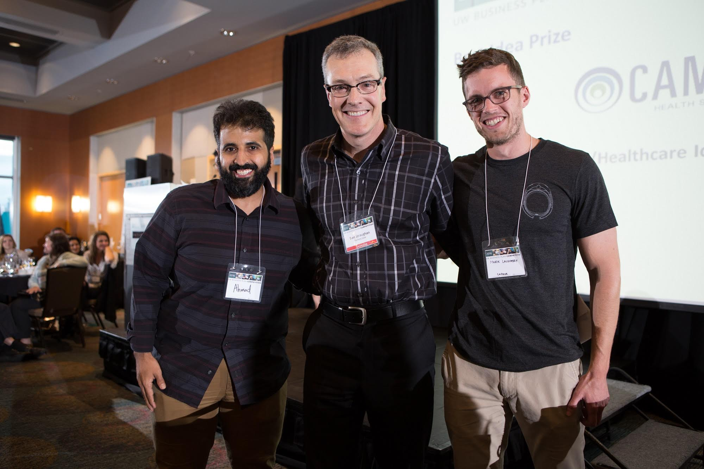

Pear Med joins CoMotion's AR/VR incubator
Aug 15, 2016
"Best Innovation" - UW Business Plan Competition.
May 28, 2016"Targeted for a venture that has a new application for a current technology, a disruptive technology, or an idea that represents a substantial improvement in a product or process."
Recap from inaugural HoloLens Hackathon
May 25, 2016The challenge was to create a simulation that trained medical practitioners how to guide a catheter into the right side of a patient's heart, then make a precise puncture in the middle of the heart to gain access to the left side of the heart. We wanted to understand how augmented reality could improve this very important and widely used technique.